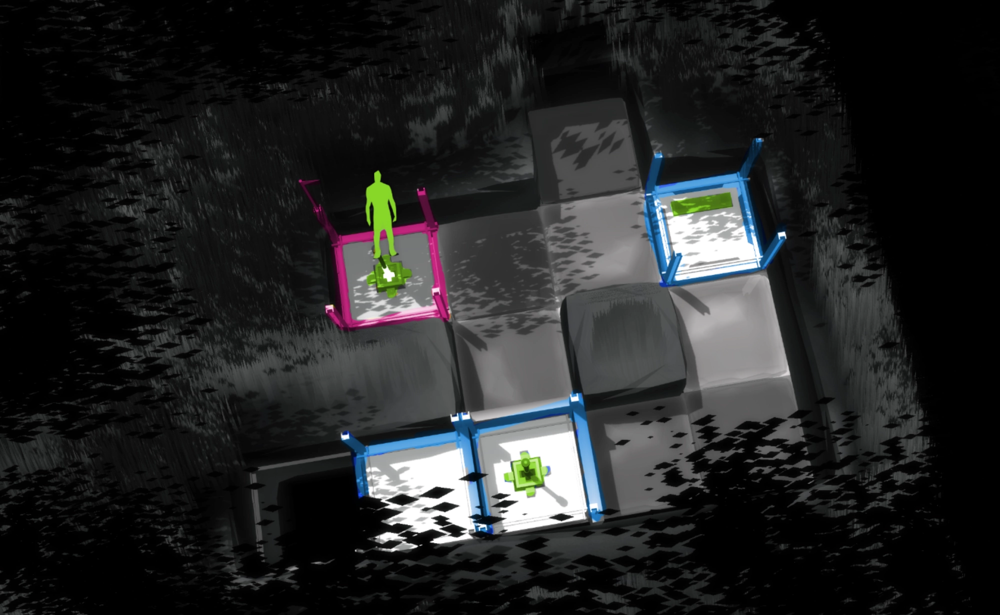
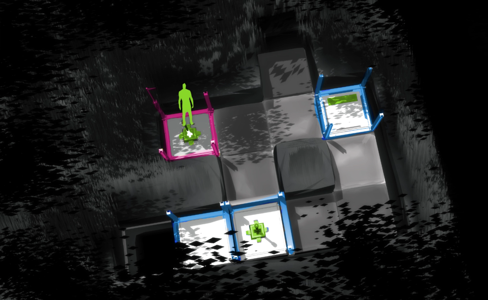

A short puzzle game about moving things.
You play as a lever that can take control of platforms to slide them around in 16 different levels.
Download

Development
ProposalIntrole is a small puzzle game I developed over several months using gamemaker. I challenged myself to make a 3d game inside an engine which usually only supports 2d. Because of this I had to develop my own tools and pipeline for editing levels, loading art assets and rendering effects such as reflections.


Color Development
 
